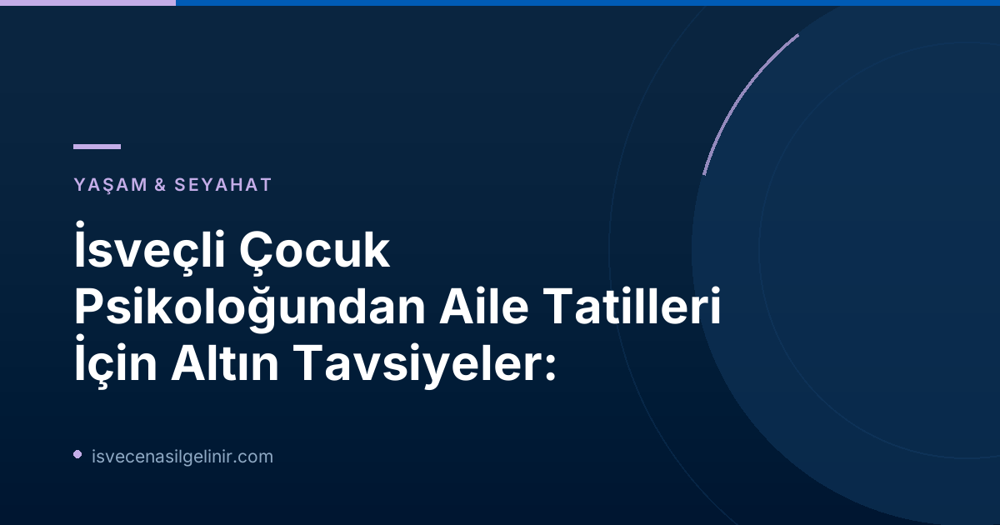

Yaz Tatilinde Yüksek Beklentilerin Gölgesindeki Aileler
Her yıl olduğu gibi bu yaz da, birçok aile için "mükemmel tatil" hayalleri kuruluyor. Güneşli günler, bol kahkahalar, sorunsuz geziler ve tüm aile bireylerinin harika vakit geçirdiği bir tablo... Ancak İsveçli çocuk psikoloğu Reyhaneh Ahangaran, SVT Nyheter'e verdiği röportajda bu yüksek beklentilerin aslında tatil keyfini gölgeleyebileceğini belirtiyor. Ahangaran, mesleki deneyimlerinde pek çok ailenin tatil öncesinde inanılmaz derecede yüksek bir "hırs düzeyine" sahip olduğunu gözlemlediğini aktarıyor. Bu durum, en ufak bir aksilikte dahi derin bir hayal kırıklığına ve strese yol açabiliyor.
Mükemmel Tatil Baskısından Kurtulun
Ahangaran'a göre, eğer çok detaylı ve iddialı bir tatil planınız varsa, bazen bir adım geri atmak gerekiyor. Tatil, her anı dolu dolu geçirilmesi gereken bir performans alanı değil, aksine dinlenme ve yeniden bağlanma zamanıdır. Bu süreçte, pahalı olmayan, sadece "rahatlatıcı şeylerle" de kaliteli vakit geçirilebileceğini unutmamak önemli. Çocuklarınızla kurduğunuz ilişkinin kalitesi, harika mekanlarda veya pahalı aktivitelerde değil; birlikte geçirdiğiniz nitelikli zamanda, paylaşılan anılarda ve samimi sohbetlerde gizli.
Ebeveynlerin sıkça yaşadığı "kötü vicdan" (dåligt samvete) hissinden de kurtulmak gerektiğinin altını çizen Ahangaran, çocuklarla vakit geçirirken sürekli "daha iyisini yapmalıyım" veya "daha fazla para harcamalıyım" baskısının anlamsız olduğunu vurguluyor. Önemli olanın, çocukların gerçekten neye ihtiyaç duyduğunu anlamak ve onlarla gerçek bağlar kurmaktır.
"Tjafs Ingår": Çocuklarla Tartışmak Tatilin Doğal Bir Parçası
Reyhaneh Ahangaran'ın belki de en dikkat çekici tespiti: "Birbirimizle kavga etmediğimiz bütün bir yaz hayalimiz olamaz, bu paketin bir parçasıdır." Bu söz, birçok ebeveynin içten içe hissettiği ancak dile getiremediği bir gerçeği gün yüzüne çıkarıyor. Tatil boyunca çocuklarla ufak tefek atışmalar, anlaşmazlıklar veya tartışmalar yaşanması son derece normaldir.
İsveçli Çocuk Psikoloğundan Önemli Notlar:
- Tatil beklentilerinizi gerçekçi tutun.
- Çocuklarla tartışmaların normal olduğunu kabul edin.
- Kaliteli zamanı, pahalı aktivitelerin önüne koyun.
- Mükemmeliyetçilikten uzaklaşın, esnek olun.
Bu durum, hem çocukların hem de yetişkinlerin farklı ihtiyaçları, istekleri ve sınırları olmasından kaynaklanır. Önemli olan, bu tartışmaların nasıl yönetildiği ve sonrasında nasıl bir uzlaşmaya varılabildiğidir. Tartışmaların kaçınılmaz olduğunu kabul etmek, ebeveynlerin omuzlarındaki "mükemmel aile" baskısını hafifletir ve daha anlayışlı bir ortam yaratmalarına yardımcı olur. İsveç Vatandaşlık Testi hakkında bilgi almak isteyenler için önemli bir kaynak olarak, kaliteli zaman ve İsveç'in sistemine uyumun önemini vurgulamak isteriz.
Kaliteli Zaman Her Şeyden Önemli
Çocuklarla iyi bir ilişki kurmanın sırrı, Ahangaran'ın da belirttiği gibi, "görkemli" etkinliklerde değil, birlikte geçirilen kaliteli zaman dilimlerinde yatar. Birlikte bir kitap okumak, parkta oynamak, basit bir yemek hazırlamak veya sadece sohbet etmek gibi günlük anlar, çocukların aileleriyle bağ kurmasını sağlayan en değerli deneyimlerdir. SVT'nin ilgili haberlerinden biri olan "Psikoterapist: Tatil spontanlığı ilişkiyi güçlendirebilir" başlığı da bu düşünceyi destekler niteliktedir. Planlı ve pahalı aktiviteler yerine, tatilin akışına bırakılan spontan anlar, hem çocukların hem de ebeveynlerin daha gerçek ve keyifli deneyimler yaşamasını sağlar.
Aile Tatillerinde Destekleyici Yaklaşımlar ve İpuçları
Stresi Azaltma ve Rahatlama Yolları
SVT Nyheter'in "Tatil strese yol açabilir – işte nasıl rahatlayacağınız" başlıklı diğer bir haberi, tatil döneminde stres yönetiminin önemine dikkat çekiyor. Tatilin dinlenmek ve yenilenmek için bir fırsat olduğunu unutmayın. İşte bazı ipuçları:
| İpucu | Açıklama |
|---|---|
| Esnek Olun | Her şeyin kusursuz gitmesini beklemeyin. Planlarda değişiklik yapmaktan çekinmeyin. |
| Rutini Koruyun | Özellikle küçük çocuklu aileler için uyku ve yemek rutinlerini tamamen bozmamak, adaptasyonu kolaylaştırır. |
| Dinlenmeye Öncelik Verin | Kendinize ve çocuklarınıza dinlenmek için bolca zaman tanıyın. Her günü aktiviteyle doldurmak zorunda değilsiniz. |
| Ekran Süresini Yönetin | Tamamen yasaklamak yerine, sağlıklı ve dengeli bir ekran süresi ayarlaması yapın. |
Ebeveynlere Özel Zaman: "Man får ingen egentid" (Kimse Kendine Zaman Ayıramıyor)
SVT'nin sokak röportajlarına da yansıyan bir diğer önemli konu, ebeveynlerin tatilde kendilerine zaman ayıramaması. Aile tatilleri ne kadar keyifli olsa da, ebeveynlerin de dinlenmeye, yalnız kalmaya ve kendi ilgi alanlarına yönelmeye ihtiyacı vardır. Çocuğunuzla geçirdiğiniz kaliteli zaman kadar, kendi ruh sağlığınız için kendinize ayıracağınız dingin anlar da tatilin verimli geçmesine katkı sağlar. Eşinizle veya güvendiğiniz bir aile büyüğüyle dönüşümlü olarak çocuklarla ilgilenerek, kendinize küçük kaçamaklar yaratmayı deneyin.
İsveç'te Tatil ve Aile Yaşamı Kültürü
İsveç, çocuk dostu politikaları ve aile yaşamına verdiği önemle bilinen bir ülkedir. Ancak bu durum, İsveçli ailelerin de tatil beklentileri ve çocuklarıyla ilişkilerinde benzer zorluklar yaşamadığı anlamına gelmez. Çocuk psikoloğu Reyhaneh Ahangaran'ın tespitleri, evrensel bir gerçeği işaret ediyor: İnsan ilişkilerinin olduğu her yerde, anlaşmazlıklar ve beklenti farklılıkları da olacaktır. Önemli olan, bu durumları kabul etmek ve bunlarla başa çıkmak için sağlıklı stratejiler geliştirmektir. İsveç vatandaşlık süreci hakkında bilgi almak ve sınava hazırlanmak için sverigemedborgarskapsprov.com adresini ziyaret ederek, İsveç sistemi hakkında daha fazla bilgi edinebilirsiniz.
Sonuç olarak, yaz tatilini hem kendiniz hem de çocuklarınız için daha keyifli ve az stresli hale getirmek istiyorsanız, beklentilerinizi gerçekçi tutun, ufak tefek tartışmaların aile hayatının doğal bir parçası olduğunu kabul edin ve en önemlisi, pahalı aktiviteler yerine kaliteli zaman geçirmeye odaklanın. Unutmayın, en değerli tatil anıları genellikle en basit ve en içten anlarda oluşur.
Referanslar:
- SVT Nyheter Inrikes: Barnpsykologen: ”Tjafs ingår”
- İsveç Vatandaşlık Sınavı: sverigemedborgarskapsprov.com
İsveç'te Yaşam ve Aile İçin Daha Fazla Bilgi!
İsveç'e dair merak ettikleriniz, çocuk eğitimi, aile yaşamı ve göçmenlik süreçleri hakkında uzman rehberliğine mi ihtiyacınız var? Sitemizdeki diğer faydalı içerikleri keşfedin ve İsveç'teki yaşam kalitenizi artırın.